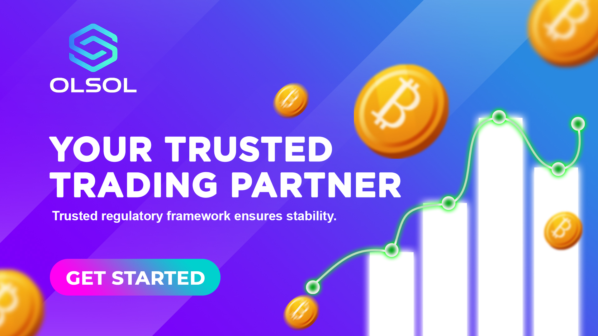
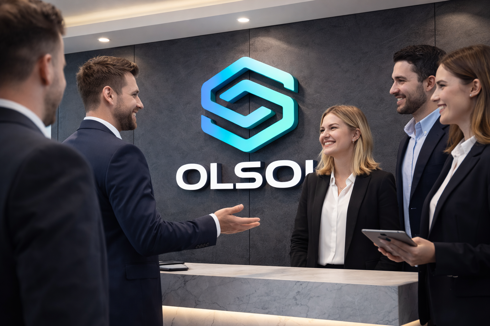

Market Themes

Tokenized Stocks
Real shares can be represented as divisible digital instruments, improving access and liquidity.

Global Access
Blockchain infrastructure can lower geographical and operational barriers for international investors.

On-Chain Finance
Tokenized assets may become collateral, yield products and programmable financial instruments.